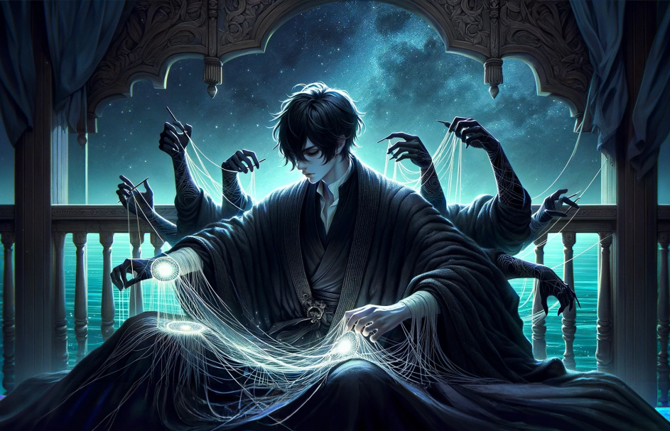

Shadow Slave
Shadow Slave
Step into a realm where shadows hold secrets and survival is both an art and a curse. Shadow Slave is more than a novel—it’s an epic journey through a dystopian universe teeming with treacherous labyrinths, enigmatic powers, and characters who blur the line between hero and villain. Unfold the gripping tale of Sunny, a man cast into the Nightmare Dungeon, where every shadow conceals danger and every choice shapes his destiny. Bound by a mysterious curse and gifted with extraordinary abilities, Sunny must navigate a world where the rules of life and death are rewritten. Here, you’ll discover character insights, plot analyses, and exclusive content that delve into the intricate web of this story. Whether you’re a longtime fan or a newcomer drawn by whispers of darkness, this is your portal to the shadows.

The Trial of the Nightmare Spell In one of the most gripping arcs, Sunny is thrust into the harrowing Nightmare treacherous realm where death lurks in every shadow and survival demands both cunning and raw strength. Here, Sunny encounters horrors that defy logic and enemies that challenge his will to live. Bound by a mysterious curse, he discovers his unique power: the ability to control shadows. This gift, however, is both a blessing and a curse, as it draws the attention of powerful foes and allies alike. Navigating a world where alliances are fragile and betrayal is common, Sunny must overcome labyrinthine puzzles, monstrous adversaries, and his own inner darkness to escape the Nightmare alive. This arc exemplifies Sunny's transformation from an ordinary man into a formidable warrior, showcasing his resourcefulness, resilience, and unyielding determination to carve his destiny in a world that seeks to break him.
You know… when I just came here, I was ready to die. After all, in this whole world — two worlds, actually — there's not a single soul who cares whether I live or die. When I'm gone, no one will be sad. No one will even remember that I existed. But then I changed my mind. Somewhere along the way, I decided to survive. I must survive, no matter what...To spite you all.